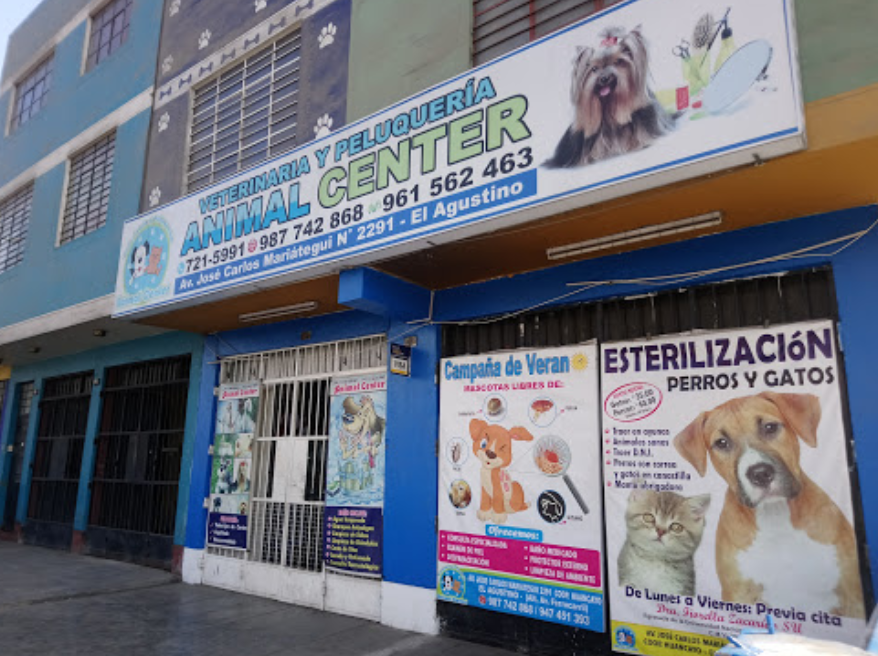

Cargando...
Bienvenidos a la Veterinaria
Animal Center
Historia

En el año 2016 se inauguró la Clínica Veterinaria Animal Center en su primera sede ubicada en el pujante distrito de el Agustino obedeciendo a la necesidad de la población de ese distrito a contar con una atención médica veterinaria especializada y a la altura de los más desarrollados distritos de Lima.
Especialidades

- Sesiones ecográficas
- Cirugia Especializada
- Control de la natalidad
- Consulta especializada
- Unidad de cuidados intensivos
- Traumatologia y ortopedia
Campañas

- Campañas de desparazitación
- Campañas de esterilización
- Campañas de nutrición
- Campañas de vacunación
300
Casos Clinicos
90%
Procedimientos quirúrgicos son de mínima invasión
5
Años de experiencia
¿Por qué elegirnos?
Calidad Profesional
Para nosotros, Clínica Veterinaria “ANIMAL CENTER”, es muy importante brindarle los servicios que su mascota necesita para llevar una vida sana y confortable. Es por eso que en nuestro centro ofrecemos nuestro servicio de neurología veterinaria, radiología, análisis de laboratorio, consultas, farmacia, en otros más, que demuestran nuestra calidad profesional.
Trato Personalizado
También le damos a su mascota baños temperados y medicados, los cuales son previa cita para que ella no se estrese esperando su turno. Como puede apreciar, siempre pensamos en el bienestar de su mascota, lo que marca la diferencia con otras clínicas veterinarias. Queremos lo mejor para los animales, a los que les brindamos un trato personalizado, entregándoles profesionalismo y calidad.